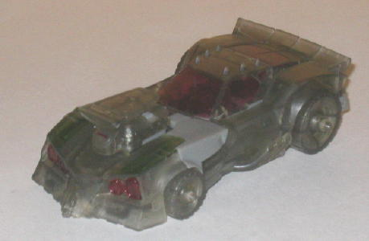
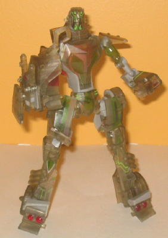

Lockdown
(Stealth) w/ Legends Bumblebee & Optimus Prime [Target Exclusive]
Lockdown
(Stealth) w/ Legends Bumblebee & Optimus Prime [Target Exclusive]
Set Price
: $15 U.S.
(NOTE: Legends class
Bumblebee
and
Optimus Prime
are the exact same as
their Universe Animated Legends toys, so check out the reviews of those
toys in the links above for the full scoop on those pack-ins.)
Lockdown
(Stealth)


Allegiance
: Decepticon
Size
: Deluxe
Difficulty of Transformation
: Medium
Color Scheme
: Transparent tinted
plastic, moderately light gray, and some transparent light red, transparent
light green, metallic gunmetal gray, and bright green
Rating
: 9.6
(NOTE: Because this is a repaint, this is
not a full-blown review. This mainly covers any changes made to the mold
and the color scheme, and merely compares it to the original Animated deluxe
Lockdown. For a review on the mold itself, read the review of the original
Animated deluxe Lockdown
here
.)
Stealth Lockdown is a
pretty cool repaint idea. Most "camouflage" redecoes done are in pretty
much all one color, with few, if any, paint applications. Stealth Lockdown
here changed that. Yes, he's mostly transparent, in keeping with the theme,
and yes, he does have fewer paint applications than his mainline toy to
help with this "ghost" effect. However, he still has quite a few paint
apps, and interestingly enough, not many of them interefere with his transparent
deco. Red and green are used quite often in the appropriate places on the
figure to make it, deco-wise, like the original toy, but they're transparent
paint apps. Quite interesting, as this kinda thing is rarely used on Transformers.
I particularly like how all the transparent green looks on his chest in
robot mode. And hey, believe it or not, Stealth Lockdown is the only version
of this mold with the rear windows actually painted! There's a couple of
non-transparent colors used, but they're accent colors-- a very bright
green used for some robotic circuitry detailing and a bit of gunmetal used
on his face. They look VERY nice in the small amounts that they're used,
particularly on the face which just pulls off the effect marvelously. There
is one caveat when it comes to Lockdown, though-- the solid flat gray plastic
used for some of his parts that are required to be "sturdier" due to ball
joints 'n such doesn't fit in with the surrounding parts at all. Usually
this is just used around ball joints so it's not a big deal, but those
two big gray panels in front of his windows in car mode are a big eyesore,
and my only real problem with Stealth Lockdown's color layout.
No mold changes have
been made to Stealth Lockdown-- so yes, he unfortunately still has the
hands that can't fold all the way out, just like the original release.
Stealth Lockdown is
a fantastic figure with a truly unique deco, particularly in robot mode.
I love the transparent paint apps and the use of the bright green on parts
of the robot mode, in particular. The gray in car mode is the only downside--
recommended the most out of all of the versions of this mold released,
and that's saying a lot. And getting two Legends figures for only $4-5
more than your average deluxe is a nice bonus!
Stealth Lockdown Character Bio
:
DECEPTICON BOUNTY HUNTER
"They'll never see me coming."
Lockdown likes to know everything there
is to know about a target before he takes it down. He employs his active
camouflage modification in order to remain unseen while he stalks his target.
Transparent to most sensors, and almost invisible to the eye, he lurks
near his prey, sometimes watching and waiting for days before he strikes.
GALACTIC POWERS AND ABILITIES:
- Active camo shorts out in rain
- Stole camo mod from an Autobot Elite
Guard
- Happiest hidden in the dark
Review by Beastbot
Back to Transformers
Animated Index